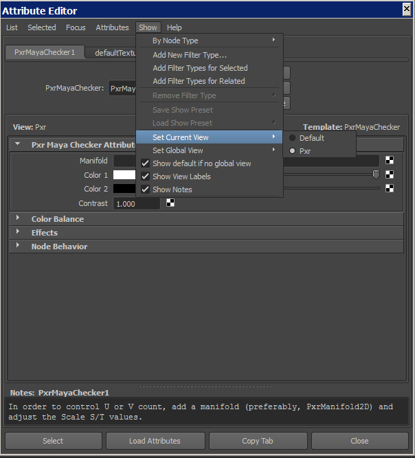

WINDOWS
In cases of a "full pack" release, it is recommended to delete all previous files/settings.
NOTE: Please close Maya before you continue.
Some basic definitions to start with (see end of page for examples):
Maya User Folder |
C:\Users\<WINDOWS_USERNAME>\Documents\maya\ |
Maya Version Folder |
C:\Users\<WINDOWS_USERNAME>\Documents\maya\<MAYA_VERSION>\ |
Pixar Folder |
C:\Program Files\Pixar\RenderManForMaya-<RM_VERSION>-maya<MAYA_VERSION>\ |
Plugin Folder |
<PATH_TO_TEMPORARY_PACK_FILES>\OS\RFM_<RM_VERSION>\<YOUR_OS>\ |
NOTE: |
Prior to version 21, the "RenderManForMaya-<RM_VERSION>-maya<MAYA_VERSION>" folder was "RenderManStudio-<RMS_VERSION>-maya<MAYA_VERSION>", you will need to change that accordingly. |
Maya 2018 users: it seems that upon loading the Renderman plugin, the local custom "RMS_SCRIPT_PATHS" set in the Maya.env file is being ignored. Please follow the standard installation/update steps as well as add a system variable "RMS_SCRIPT_PATHS" with the path to the ini folder ("c:\Users\<WINDOWS_USERNAME>\Documents\maya\pxr\ris\21.7\ini").
Step 1: Unpack the attached file to a temporary folder on your drive.
Step 2: Move the "scripts" and the "pxr" folders to the Maya User Folder.
Step 3: Copy the files within the Plugin Folder to the "nodes" folder ("ris" for versions earlier than 22.1) in the "pxr\<RM_VERSION>" folder you just copied above.
Step 4: Move the content of the "<PATH_TO_TEMPORARY_PACK_FILES>\MAYA_VERSION" folder to your Maya Version Folder.
Step 5: This step is for version 22 and up - Edit the "rfm.json" file in the "Maya User Folder\pxr\<RM_VERSION>\config" folder, making sure to change any <> place holders and that the paths are correct.
Step 6: Append your "userSetup.mel" file in the "Maya Version Folder\scripts" folder within the content of the one provided in the root of the archive (append_to_usersetup.mel), making sure to change any <> place holders.
Step 7: Append your "Maya.env" file in the Maya Version Folder folder within the content of the one provided in the root of the archive (append_to_Maya.env), making sure to change any <> place holders.
Step 8: Locate your Pixar Folder and navigate to "lib\plugins" ("\shaders\" for versions earlier than 22.1), there you will find precompiled PxrM*.DLL files that the Pixar's Renderman team included. Read the "plugin_info.txt" file in the root of the archive to know what other steps to take in order to copy the correct DLL files.
Step 9: Create a new system variable with variable name of "MAYA_CUSTOM_TEMPLATE_PATH" (without the quotes) and the variable value of the "Maya User Folder\scripts\AETemplates\" (again, without the quotes).
Step 10: Run Maya and make sure the Renderman plugin is loaded. Create any one of the PxrM nodes and in the Attribute Editor go to the "Show" menu, set the Current and/or Global view to Pxr. If the "Set Global View" doesn't bring up any options, use the following command "setGlobalView "Pxr";" (without the outer quotes).

Step 11: Create shelf buttons to the scripts and tools (from Step 2) as you normally would, you can use the supplied icons for them.
NOTE: If you have an existing "RMS_SCRIPT_PATHS" definition in your system variables, it will most likely conflict with this setup (see notes about Maya 2018).
Path Examples: |
C:\Users\<WINDOWS_USERNAME>\Documents\maya\<MAYA_VERSION>\ |
C:\Users\Ethan\Documents\maya\2018\ |
C:\Program Files\Pixar\RenderManForMaya-<RM_VERSION>-maya<MAYA_VERSION>\ |
C:\Program Files\Pixar\RenderManForMaya-21.2-maya2017\ |
C:\Users\<WINDOWS_USERNAME>\Documents\maya\pxr\<RM_MAJOR_VERSION>\ini |
C:\Users\Ethan\Documents\maya\pxr\21\ini |
Ethan's RFM Enhancement Pack is a property of Ethan Phoenix.
All Rights Reserved © Ethan Phoenix. For personal use only. Commercial use is prohibited. Not for redistribution without permission.